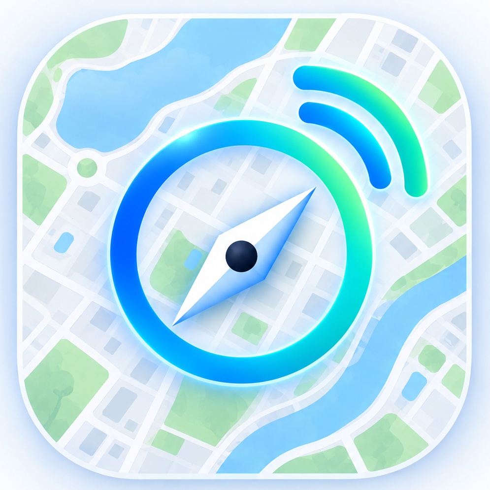

Plan around better connections
Find out when and where your network tends to perform best, so you can plan gaming, online meetings, and large downloads with more confidence.

netscout Join the waitlistBUILT FOR OAU & ITS ENVIRONS
The days of frustrating gaming sessions, interrupted online meetings, and painfully slow downloads don't have to be the norm. Net Scout helps you discover network quality around OAU and its environs, compare providers, and understand how internet performance changes by location and time.
Make informed decisions, avoid network disappointments, and spend less time struggling with your connection.
✓ Built by students, for students.
LESS GUESSWORK. BETTER CONNECTIONS.
Internet connectivity should be part of your plan, not a daily surprise.
Find out when and where your network tends to perform best, so you can plan gaming, online meetings, and large downloads with more confidence.
Compare network quality in on-campus and off-campus areas before committing to rent.
Explore observed performance by location and compare providers to find options that better fit your needs.
Understand how connection quality changes by location and time, including periods when a network may become less reliable.
COMMUNITY-POWERED INSIGHT
Net Scout is being developed to turn real-world network tests into a clearer, location-based picture of internet quality. The map on this page is an illustration, not live coverage data.